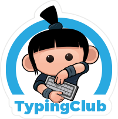
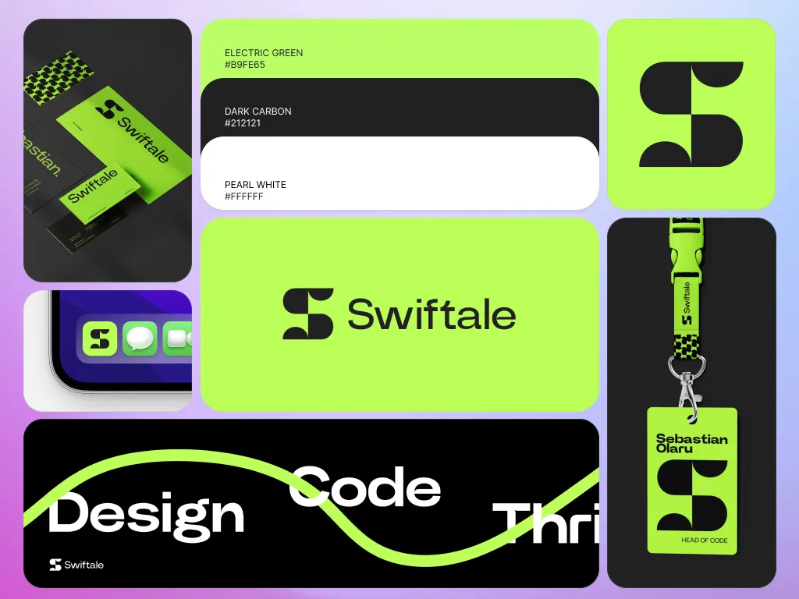
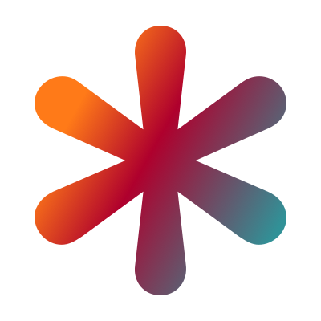
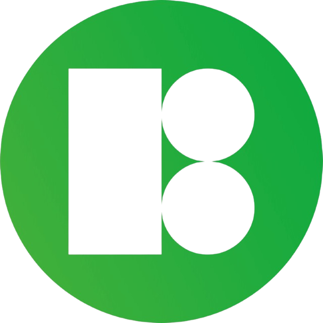
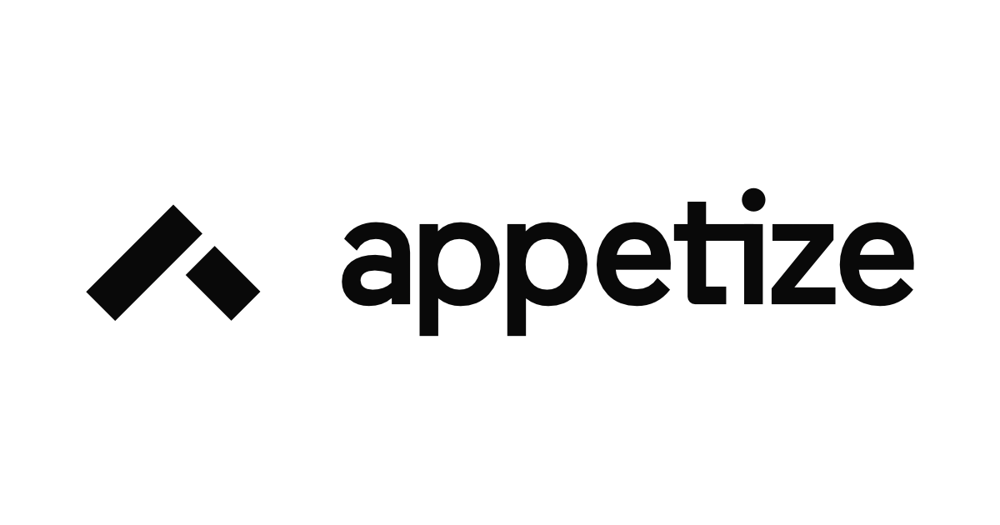

Recursos!
Aquest apartat servirà de repositori/biblioteca de recursos que vegui interesants o útils.
Dead links checker
Troba enllaços trencats.
Dead links checker
Eina online per analitzar el teu lloc web i detectar tots aquells enllaços que ja no funcionen (mirar links trencats).
Més infoTaw
Accessibilitat web.
Taw
Eina per comprovar l'accessibilitat de les pàgines web i assegurar que compleixen els estàndards per a tothom.
Més infoVS Code Online
Editor de codi al navegador.
Visual Studio Code ONLINE
La versió lleugera del famós editor de Microsoft que s'executa totalment des del teu navegador preferit.
Més info
Typingclub
Practica la mecanografia.
Typingclub
Plataforma interactiva i gratuïta per aprendre i millorar la teva velocitat i precisió escrivint amb el teclat.
Més infoPcBuilds
Càlcul de coll de botella.
PcBuilds
Calculadora especialitzada per analitzar el "cuello de botella" (bottleneck) entre els components del teu PC.
Més infoDevDocs
Documentació de programació.
DevDocs
Una base de dades gegant que combina la documentació de TOTS els llenguatges de programació en una sola web.
Més info
Bento grids
Idees de posicionament.
Bento grids
Inspiració i idees per al posicionament d'elements en una pàgina web seguint l'estil de graella tipus Bento.
Més infoCodePen
Practica front-end dev.
CodePen
Entorn social de desenvolupament per provar codi HTML, CSS i JavaScript i compartir-lo amb la comunitat.
Més info
Css-Tricks
Tips i trucos de CSS.
Css-Tricks
El portal de referència per aprendre trucs avançats de disseny web i estar al dia amb les novetats de CSS.
Més info
Iconos8 (Editor)
Canvia colors d'icones.
Iconos8
Eina que et permet personalitzar i canviar els colors de les icones abans de descarregar-les.
Més infoTree size
Neteja el disc (Windows).
Tree size
Programa per a Windows que t'ajuda a veure quins fitxers ocupen més espai per netejar el teu disc dur.
Més infoUi path
Automatització de processos.
Ui path
Plataforma per automatitzar processos, clics i entrades de teclat en l'entorn Windows de forma eficient.
Més infoIconos8 (Biblioteca)
Icones gratis i editables.
Iconos8
Pàgina on pots trobar una gran varietat d'icones gratuïtes i editables en pràcticament tots els formats.
Més infoDriverpackio
Cerca de drivers.
Driverpackio
Servei de cerca i instal·lació de controladors (drivers) mitjançant l'ID de hardware del teu equip.
Més info
Appetize
Emulador de dispositius mòbils.
Appetize
Emulador online de dispositius mòbils ideal per fer captures de pantalla i provar aplicacions al navegador.
Més infoWindows Activator
Activador de Windows (GitHub).
Windows Github Activator
Com el seu nom indica, un script de codi obert per a l'activació de productes Microsoft Windows.
Més infoUnattend Generator
Instal·lacions desateses.
Generador Unattend
Generador de fitxers de resposta per realitzar instal·lacions de Windows totalment desateses i personalitzades.
Més info